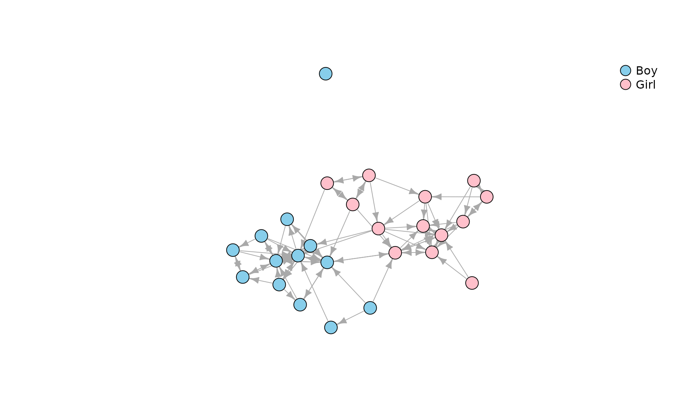
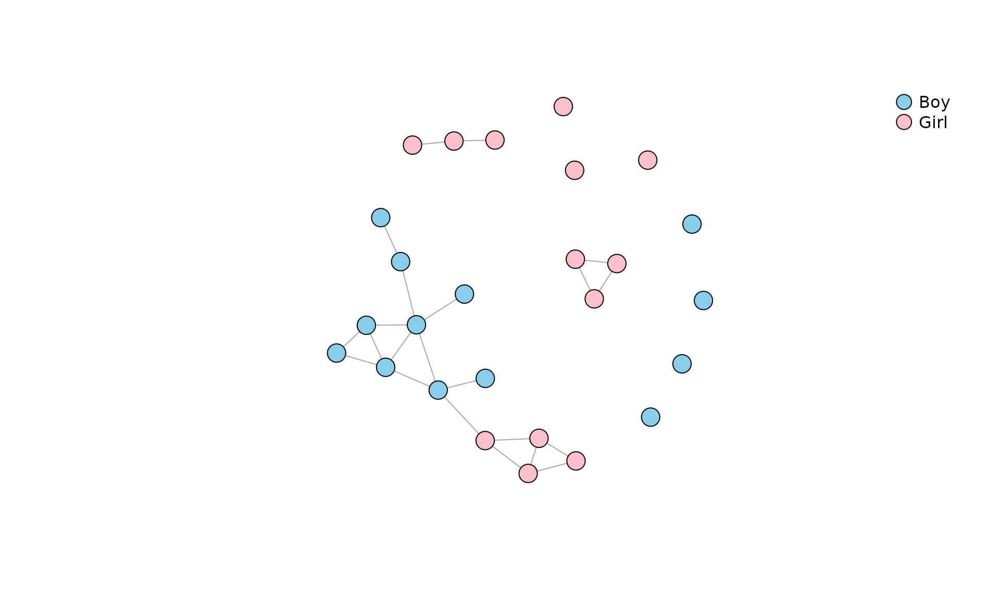

Network Segregation and Homophily
Michał Bojanowski
February 15, 2021
Source:vignettes/netseg.Rmd
netseg.RmdThe following vignette demonstrates using the functions from package netseg (Michal Bojanowski 2021). Two example datasets are described in the next section. Mixing matrices are described in section 2 and the measures are described in section 3. Please consult Michał Bojanowski and Corten (2014) for further details.
Data
data(Classroom)In the examples below we will use data Classroom, a
directed network in a classroom of 26 kids (Dolata, n.d.). Ties correspond to nominations
from a survey question “With whom do you like to play with?”. Here is a
picture:
plot(
Classroom,
vertex.color = c("Skyblue", "Pink")[match(V(Classroom)$gender, c("Boy", "Girl"))],
vertex.label = NA,
vertex.size = 10,
edge.arrow.size = .7
)
legend(
"topright",
pch = 21,
legend = c("Boy", "Girl"),
pt.bg = c("Skyblue", "Pink"),
pt.cex = 2,
bty = "n"
)
For us it will be a graph \(G = <V, E>\) where the node-set \(V = \{1, ..., i, ..., N\}\) correspond to kids, and edges \(E\) correspond to “play-with” nominations. Additionally, we need a node attribute, say \(X\), exhaustivelty assigning nodes to mutually-exclusive \(K\) groups. In the classroom example \(X\) is gender with values “Boy” and “Girl” (so \(K=2\)).
Some measures are applicable only to an undirected network. For that
purpose let’s create an undirected network of reciprocated nominations
in the Classroom network and call it
undir:
undir <- as.undirected(Classroom, mode="mutual")
plot(
undir,
vertex.color = c("Skyblue", "Pink")[match(V(undir)$gender, c("Boy", "Girl"))],
vertex.label = NA,
vertex.size = 10,
edge.arrow.size = .7
)
legend(
"topright",
pch = 21,
legend = c("Boy", "Girl"),
pt.bg = c("Skyblue", "Pink"),
pt.cex = 2,
bty = "n"
)
Mixing matrix
Mixing matrix is traditionally a two-dimensional cross-classification of edges depending on group membership of the adjacent nodes. A three-dimensional version of a mixing matrix cross-classifies all the dyads according to the following criteria:
- Group membership of the ego
- Group membership of the alter
- Whether or not ego and alter are directly connected
Formally, mixing matrix is a matrix \(M\) in which entry \(m_{ghy}\) is a number of pairs of nodes such that
- The first node belongs to group \(g\)
- The second node belongs to group \(h\)
-
\(y\) is
TRUEif there is a tie, \(y\) isFALSEif there is no tie
We can compute the mixing matrix for the classroom network and
attribute gender with the function mixingm().
By default the traditional two-dimensional version is returned:
mixingm(Classroom, "gender")
#> alter
#> ego Boy Girl
#> Boy 40 2
#> Girl 5 41Among other things we see that:
- There are \(40 + 41 = 81\) ties within groups.
- There are only \(5 + 2 = 7\) ties between groups.
Supplying argument full=TRUE the function will return an
three-dimensional array cross-classifying the dyads:
m <- mixingm(Classroom, "gender", full=TRUE)
m
#> , , tie = FALSE
#>
#> alter
#> ego Boy Girl
#> Boy 116 167
#> Girl 164 115
#>
#> , , tie = TRUE
#>
#> alter
#> ego Boy Girl
#> Boy 40 2
#> Girl 5 41We can analyze the mixing matrix as a typical frequency crosstabulation. For example:
- What is the probability of a tie depending on attributes of nodes?
round( prop.table(m, c(1,2)) * 100, 1)
#> , , tie = FALSE
#>
#> alter
#> ego Boy Girl
#> Boy 74.4 98.8
#> Girl 97.0 73.7
#>
#> , , tie = TRUE
#>
#> alter
#> ego Boy Girl
#> Boy 25.6 1.2
#> Girl 3.0 26.3- What is the distribution of group memberships of alters depending on the attribute of ego?
round( prop.table(m[,,2], 1 ) * 100, 1)
#> alter
#> ego Boy Girl
#> Boy 95.2 4.8
#> Girl 10.9 89.1In other words, boys are 95% of nominations of other boys, but only 11% of nominations of girls.
Function mixingm() works also for undirected networks,
values below the diagonal are always 0:
mixingm(undir, "gender")
#> ego
#> alter Boy Girl
#> Boy 11 1
#> Girl 0 10
mixingm(undir, "gender", full=TRUE)
#> , , tie = FALSE
#>
#> ego
#> alter Boy Girl
#> Boy 67 168
#> Girl 0 68
#>
#> , , tie = TRUE
#>
#> ego
#> alter Boy Girl
#> Boy 11 1
#> Girl 0 10Most of the segregation indexes described below summarize the mixing matrix.
Mixing data frames
Function mixingdf() returns the same data in the form of
a data frame. For directed Classroom network:
mixingdf(Classroom, "gender")
#> ego alter n
#> 1 Boy Boy 40
#> 2 Girl Boy 5
#> 3 Boy Girl 2
#> 4 Girl Girl 41
mixingdf(Classroom, "gender", full=TRUE)
#> ego alter tie n
#> 1 Boy Boy FALSE 116
#> 2 Girl Boy FALSE 164
#> 3 Boy Girl FALSE 167
#> 4 Girl Girl FALSE 115
#> 5 Boy Boy TRUE 40
#> 6 Girl Boy TRUE 5
#> 7 Boy Girl TRUE 2
#> 8 Girl Girl TRUE 41For undir:
Measures
Coleman’s homophily index
Coleman’s index compares the distribution of group memberships of alters with the distribution of group sizes. It captures the extent the nominations are “biased” due to the preference for own group.
- We have a separate value for each group
- Values are in [-1; 1]
- 0 – Members of the given group nominate their group peers proportionally to the relative group size.
- 1 – All nominations are from own group.
- -1 – All nominations are from groups other than own.
coleman(Classroom, "gender")
#> Boy Girl
#> 0.9084249 0.7909699Values are close to 1 (high segregation). The value for boys is greater than for girls, so girls nominated boys a bit more often than boys nominated girls.
Freeman’s segregation index
Is applicable to undirected networks with two groups.
- Values in [0;1]
Function freeman:
freeman(undir, "gender")
#> [1] 0.9125874Segregation Matrix Index
smi(Classroom, "gender")
#> Boy Girl
#> 0.9117647 0.9138241Spectral segregation index
Values for vertices
(v <- ssi(undir, "gender"))
#> 1 2 3 4 5 6 7 8
#> 1.1392193 0.7033670 0.9816498 1.0000000 1.0000000 0.9973715 1.0000000 0.0000000
#> 9 10 11 12 13 14 15 16
#> 0.0000000 0.0000000 0.0000000 0.0000000 0.7151930 0.6925726 0.0000000 1.0333177
#> 17 18 19 20 21 22 23 24
#> 0.9701057 1.0344291 1.0550505 1.0299471 1.0000000 1.0000000 1.0000000 1.1031876
#> 25 26
#> 0.0000000 0.9816498Plotted with grayscale (the more segregated the darker the color):
kol <- gray(scales::rescale(v, 1:0))
plot(
undir,
vertex.shape = c("circle", "square")[match(V(undir)$gender, c("Boy", "Girl"))],
vertex.color = kol,
vertex.label = V(undir),
vertex.label.color = ifelse(apply(col2rgb(kol), 2, mean) > 125, "black", "white"),
vertex.size = 15,
vertex.label.family = "sans",
edge.arrow.size = .7
)